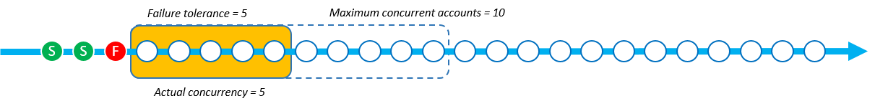
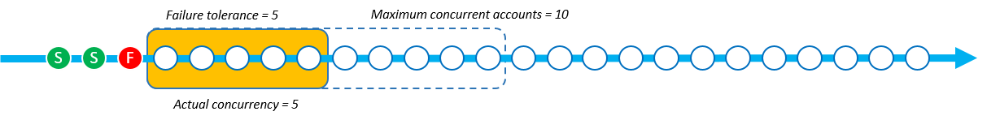

Terjemahan disediakan oleh mesin penerjemah. Jika konten terjemahan yang diberikan bertentangan dengan versi bahasa Inggris aslinya, utamakan versi bahasa Inggris.
Parameter Mode Konkurensi
Mode Konkurensi adalah parameter StackSetOperationPreferencesyang memungkinkan Anda memilih bagaimana tingkat konkurensi berperilaku selama operasi set tumpukan. Anda dapat memilih antara mode berikut:
-
Toleransi Kegagalan Ketat: Opsi ini secara dinamis menurunkan tingkat konkurensi untuk memastikan jumlah akun yang gagal tidak pernah melebihi nilai toleransi Kegagalan +1. Konkurensi aktual awal diatur ke nilai yang lebih rendah dari nilai akun bersamaan Maksimum, atau nilai toleransi Kegagalan +1. Konkurensi aktual kemudian dikurangi secara proporsional dengan jumlah kegagalan. Ini adalah perilaku default.
-
Soft Failure Tolerance: Opsi ini memisahkan toleransi kegagalan dari konkurensi yang sebenarnya. Ini memungkinkan operasi set tumpukan berjalan pada tingkat konkurensi yang ditetapkan oleh nilai akun bersamaan Maksimum, terlepas dari jumlah kegagalannya.
Toleransi Kegagalan Ketat menurunkan kecepatan penerapan karena kegagalan operasi set tumpukan terjadi karena konkurensi menurun untuk setiap kegagalan. Soft Failure Tolerance memprioritaskan kecepatan penerapan sambil tetap memanfaatkan AWS CloudFormation kemampuan keselamatan. Ini memungkinkan Anda untuk meninjau dan mengatasi kegagalan operasi set tumpukan untuk masalah umum seperti yang terkait dengan sumber daya yang ada, kuota layanan, dan izin.
Untuk informasi selengkapnya tentang kegagalan operasi StackSets tumpukan, lihatAlasan umum untuk kegagalan operasi tumpukan.
Untuk informasi selengkapnya tentang Akun bersamaan maksimum dan Toleransi kegagalan, lihatOpsi operasi set tumpukan.
Cara kerja setiap Mode Konkurensi
Gambar di bawah ini memberikan representasi visual tentang bagaimana setiap Mode Konkurensi bekerja selama operasi set tumpukan. String node mewakili penyebaran ke tunggal Wilayah AWS dan setiap node adalah targetAkun AWS.
- Toleransi Kegagalan yang Ketat
-
Ketika operasi set tumpukan menggunakan Toleransi Kegagalan Ketat memiliki nilai toleransi Kegagalan ditetapkan ke 5 dan nilai akun bersamaan Maksimum ditetapkan ke 10, konkurensi sebenarnya adalah 6. Konkurensi aktual adalah 6 karena ini nilai toleransi Kegagalan 5 +1 lebih rendah dari nilai akun bersamaan Maksimum.
Gambar berikut menunjukkan dampak nilai toleransi Kegagalan terhadap nilai akun bersamaan Maksimum, dan dampaknya terhadap konkurensi aktual dari operasi kumpulan tumpukan:

Ketika penerapan dimulai dan ada instance tumpukan yang gagal, maka konkurensi sebenarnya berkurang untuk memberikan pengalaman penerapan yang aman. Konkurensi aktual berkurang dari 6 menjadi 5 ketika StackSets gagal menerapkan 1 instance tumpukan.
 
Mode Toleransi Kegagalan Ketat mengurangi konkurensi aktual secara proporsional dengan jumlah instance tumpukan yang gagal. Dalam contoh berikut, konkurensi aktual berkurang dari 5 menjadi 3 ketika StackSets gagal menerapkan 2 instance tumpukan lagi, sehingga total instance tumpukan yang gagal menjadi 3.

StackSets gagal operasi set tumpukan ketika jumlah instance tumpukan gagal sama dengan nilai yang ditentukan dari toleransi Kegagalan +1. Dalam contoh berikut, StackSets gagal operasi ketika ada 6 instance tumpukan gagal dan nilai toleransi kegagalan adalah 5.

Dalam contoh ini, StackSets menerapkan 9 instance tumpukan (3 berhasil dan 6 gagal) sebelum menghentikan operasi set tumpukan.
- Toleransi Kegagalan Lunak
-
Ketika operasi stack set menggunakan Soft Failure Tolerance memiliki nilai toleransi Kegagalan ditetapkan ke 5 dan nilai akun bersamaan Maksimum ditetapkan ke 10, konkurensi sebenarnya adalah 10.

Saat penerapan dimulai dan ada instance tumpukan yang gagal, konkurensi sebenarnya tidak berubah. Dalam contoh berikut, 1 operasi tumpukan gagal, tetapi konkurensi sebenarnya tetap pada 10.

Konkurensi aktual tetap pada 10 bahkan setelah 2 kegagalan instance tumpukan lagi.

StackSets gagal operasi set tumpukan ketika instance tumpukan gagal melebihi nilai toleransi Kegagalan. Dalam contoh berikut, StackSets gagal operasi ketika ada 6 instance tumpukan gagal dan jumlah toleransi kegagalan adalah 5. Namun, operasi tidak akan berakhir sampai operasi yang tersisa dalam antrian konkurensi selesai.

StackSets terus menerapkan instance tumpukan yang sudah ada dalam antrian konkurensi. Ini berarti bahwa jumlah instance tumpukan gagal bisa lebih tinggi daripada toleransi Kegagalan. Dalam contoh berikut, ada 8 instance tumpukan gagal karena antrian konkurensi masih memiliki 7 operasi yang tersisa untuk dilakukan, meskipun operasi set tumpukan telah mencapai toleransi Kegagalan 5.

Dalam contoh ini, StackSets menerapkan 15 instance tumpukan (7 berhasil dan 8 gagal) sebelum menghentikan operasi tumpukan.
Memilih antara toleransi kegagalan yang ketat dan toleransi kegagalan lunak berdasarkan kecepatan penerapan
Memilih antara Toleransi kegagalan yang ketat dan mode toleransi kegagalan lunak bergantung pada kecepatan yang diinginkan dari penerapan set tumpukan Anda dan jumlah kegagalan penerapan yang diizinkan.
Tabel berikut menunjukkan bagaimana setiap mode konkurensi menangani operasi set tumpukan yang gagal saat mencoba menerapkan 1000 instance tumpukan total. Dalam setiap skenario, nilai toleransi Kegagalan diatur ke 100 instance tumpukan dan nilai akun bersamaan Maksimum diatur ke 250 instance tumpukan.
Meskipun StackSets sebenarnya mengantri akun sebagai jendela geser (lihatCara kerja setiap Mode Konkurensi), contoh ini menunjukkan operasi dalam batch untuk menunjukkan kecepatan setiap mode.
Toleransi kegagalan yang ketat
Contoh menggunakan mode toleransi kegagalan ketat ini menurunkan konkurensi aktual relatif terhadap jumlah kegagalan yang terjadi di setiap batch sebelumnya. Setiap batch memiliki 20 instance gagal, yang kemudian menurunkan konkurensi aktual dari batch berikut sebesar 20 hingga operasi set tumpukan mencapai nilai toleransi Kegagalan 100.
Dalam tabel berikut, konkurensi aktual awal dari batch pertama adalah 101 instance tumpukan. Konkurensi sebenarnya adalah 101 karena nilai yang lebih rendah dari akun bersamaan Maksimum (250) dan toleransi Kegagalan (100) +1. Setiap batch berisi 20 penerapan instans tumpukan yang gagal, yang kemudian menurunkan konkurensi aktual dari setiap batch berikut sebanyak 20 instance tumpukan.
| Toleransi kegagalan yang ketat | Batch 1 | Batch 2 | Batch 3 | Batch 4 | Batch 5 | Batch 6 |
|---|---|---|---|---|---|---|
| Hitungan konkurensi aktual | 101 | 81 | 61 | 41 | 21 | - |
| Hitungan instans gagal | 20 | 20 | 20 | 20 | 20 | - |
| Jumlah instans tumpukan yang berhasil | 81 | 61 | 41 | 21 | 1 | - |
Operasi yang menggunakan toleransi kegagalan yang ketat menyelesaikan 305 penerapan instans tumpukan dalam 5 batch pada saat operasi set tumpukan mencapai toleransi Kegagalan 100 instance tumpukan. Operasi set tumpukan berhasil menyebarkan 205 instance tumpukan sebelum gagal.
Toleransi kegagalan lunak
Contoh menggunakan mode toleransi kegagalan lunak ini mempertahankan jumlah konkurensi aktual yang sama yang ditentukan oleh nilai akun bersamaan Maksimum dari 250 instance tumpukan, terlepas dari jumlah instans yang gagal. Operasi set tumpukan menyimpan konkurensi aktual yang sama hingga mencapai nilai toleransi Kegagalan 100 instance.
Dalam tabel berikut, konkurensi aktual awal dari batch pertama adalah 250 instance tumpukan. Konkurensi aktual adalah 250 karena nilai akun bersamaan Maksimum diatur ke 250 dan mode toleransi kegagalan lunak memungkinkan StackSets untuk menggunakan nilai ini sebagai konkurensi aktual, terlepas dari jumlah kegagalan. Meskipun ada 50 kegagalan di masing-masing batch untuk contoh ini, konkurensi sebenarnya tetap tidak terpengaruh.
| Toleransi kegagalan lunak | Batch 1 | Batch 2 | Batch 3 | Batch 4 | Batch 5 | Batch 6 |
|---|---|---|---|---|---|---|
| Hitungan konkurensi aktual | 250 | 250 | - | - | - | - |
| Hitungan instans gagal | 50 | 50 | - | - | - | - |
| Jumlah instans tumpukan yang berhasil | 200 | 200 | - | - | - | - |
Menggunakan nilai akun bersamaan Maksimum dan nilai toleransi Kegagalan yang sama, operasi menggunakan mode toleransi kegagalan lunak menyelesaikan 500 penerapan instans tumpukan dalam 2 batch. Operasi set tumpukan berhasil menyebarkan 400 instance tumpukan sebelum gagal.
Memilih Mode Konkurensi Anda menggunakan AWS Management Console
Anda dapat memilih Mode Konkurensi untuk set tumpukan baru atau yang sudah ada di halaman opsi Tetapkan penerapan.
Untuk informasi selengkapnya tentang membuat set tumpukan baru menggunakanAWS Management Console, lihatBuat set tumpukan.
Untuk informasi selengkapnya tentang memperbarui set tumpukan yang ada menggunakanAWS Management Console, lihatPerbarui set tumpukan Anda menggunakan konsol AWS CloudFormation.
Untuk informasi selengkapnya tentang menghapus kumpulan tumpukan menggunakanAWS Management Console, lihatHapus set tumpukan menggunakan AWS Management Console.
Memilih Mode Konkurensi Anda menggunakan AWS Command Line Interface
Anda dapat menggunakan ConcurrencyMode parameter dengan StackSets perintah berikut:
Perintah ini memiliki parameter yang ada --operation-preferences yang disebut yang dapat menggunakan ConcurrencyMode pengaturan. ConcurrencyModedapat diatur ke salah satu nilai berikut:
-
STRICT_FAILURE_TOLERANCE -
SOFT_FAILURE_TOLERANCE
Contoh berikut membuat instance stack menggunakan STRICT_FAILURE_TOLERANCEConcurrencyMode, dengan FailureToleranceCount set ke 10 dan MaxConcurrentCount set ke 5:
aws cloudformation create-stack-instances \ --stack-set-nameexample-stackset\ --accounts123456789012\ --regionseu-west-1\ --operation-preferences ConcurrencyMode=STRICT_FAILURE_TOLERANCE,FailureToleranceCount=10,MaxConcurrentCount=5
Untuk informasi lebih lanjut tentang membuat set tumpukan baru menggunakan AWS Command Line Interface (CLI), lihat. Buat set tumpukan
Untuk informasi selengkapnya tentang memperbarui set tumpukan yang ada menggunakanAWS CLI, lihatPerbarui set tumpukan Anda menggunakan AWS CLI.
Untuk informasi selengkapnya tentang menghapus kumpulan tumpukan menggunakanAWS CLI, lihatHapus set tumpukan menggunakan AWS CLI.